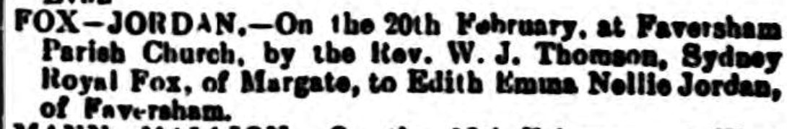

Edith Emma Nellie Fox (née Jordan) cNov 1885 - 1940
[ Home ] | [ Calendar ] | [ Surnames Index ] | [ Errors ] | [ Family History ]A domestic housemaid and the child of James Jordan (a horse keeper) and Julia Culmer, Edith Jordan, the second cousin twice-removed on the mother's side of Nigel Horne, was born in Faversham, Kent, England c. Nov 18851,2, was baptised there at St Mary of Charity Church, Church Road on 27 Nov 1885 and also married Sydney Fox (with whom she had 1 child, Victor Royal) there at St Mary of Charity Church, Church Road on 20 Feb 19094.
During her life, she was living at 2 Mill Place in Faversham on 5 Apr 18915 - less than a mile from her sister Alice Ann Harriet who was living at 2 Mill Place in Faversham; and at 235 Balham High Road, Wandsworth, London, England on 31 Mar 19011.
She died on 31 Jan 1940 in Faversham3.
Parents
- James was born on 16 Jan 1854
- Julia was born on 17 Apr 1852
Children
- Victor Royal was born c. 2 Jun 1911
Citations
- 1901 England, Wales & Scotland Census - Findmypast (was age 16 and a servant in the household)
- England & Wales births 1837-2006 - Findmypast
- England & Wales deaths 1837-2007 - Findmypast
- England & Wales Marriages 1837-2005 - Findmypast
- 1891 England, Wales & Scotland Census - Findmypast (was age 5 and the daughter of the head of the household)
Media
Faversham Times and Mercury and North-East Kent Journal - 27 Feb 1909

England Births & Baptisms 1538-1975 - R_885851565
Kent Baptisms - GBPRS/CANT/B/96260550
England & Wales births 1837-2006 - BMD/B/1885/4/AZ/000318/010
England & Wales deaths 1837-2007 - BMD/D/1940/1/AZ/000488/028
England & Wales marriages 1837-2005 - BMD/M/1909/1/AZ/000143/330
1901 England, Wales & Scotland Census - GBC/1901/0003435385
Family Tree

Map
Generated by ged2site. Last updated on Jul 3, 2024
Known Issues
1939 UK register information missing